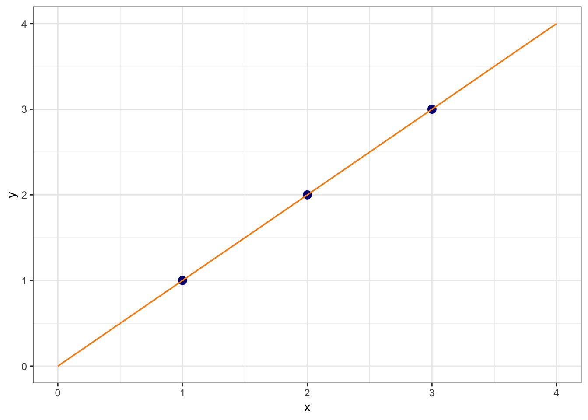
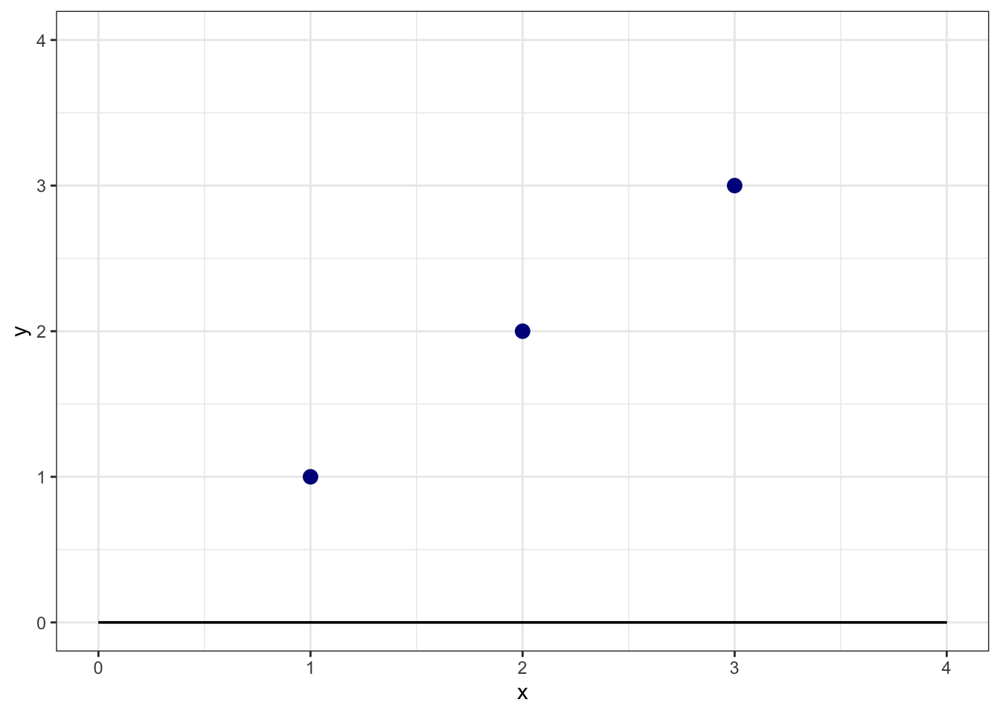
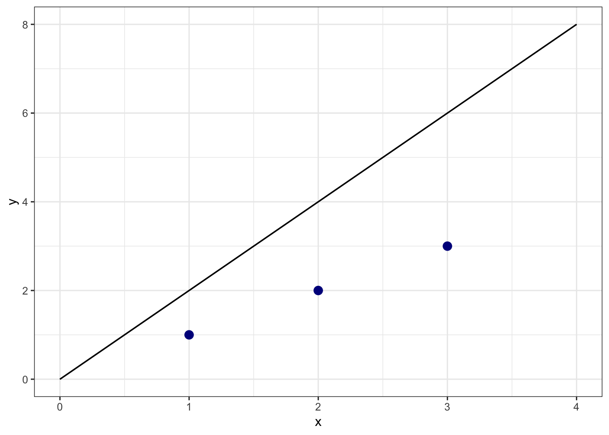
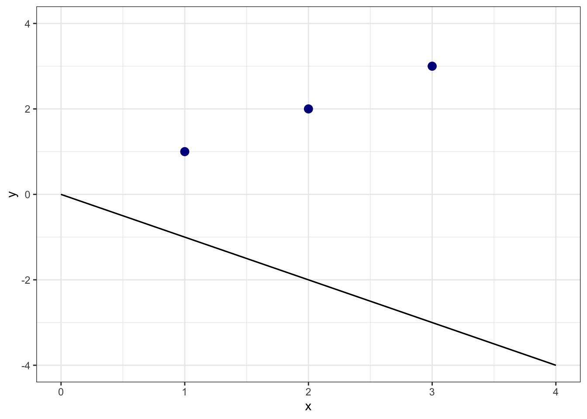

Models are a common feature of modern social scientific analysis. A model is a simplified representation of reality that we use to make predictions or to explain relationships between variables. We use models to help us address important questions like “is oil wealth associated with regime type?” or “where is violence most likely to happen in country X during their next election?” We use models to help explain the relationship between variables and to make predictions.
At root, models are based on the idea that we can represent relationships between variables using functions. A function is a mathematical concept that describes the relationship between an output and one or more inputs. In the context of social science, we often think of functions as describing the relationship between a dependent variable (the thing we are trying to explain or predict) and one or more independent variables (the things we think might help us explain or predict the outcome).
Note
A word about social science terminology. In social science, we often use the term dependent variable to refer to the outcome variable and independent variable to refer to the explanatory variables. But you will hear many other terms used to refer to these concepts. For example, in statistics, the dependent variable is often called the response variable, the outcome variable or the Y variable while the independent variable is rreferred to as explanatory variables, or predictors. We will use these terms interchangeably.
The idea behind a function is that we can plug in the inputs and receive back the output. For example, the formula \(y = 3x + 7\) is a function with input \(x\) and output \(y\). If \(x\) is \(5\), \(y\) is \(22\). In this case, \(y = 3 \times 5 + 7 = 22\). In social science models, \(x\) and \(y\) are going to be variables like GDP per capita and democracy, or oil wealth and regime type.
Typically, we are going to use models when we have observational data. Observational data is data that we have collected from the world around us and can be contrasted with experimental data which is data that we have collected from a controlled experiment. In the social sciences, we often use observational data because it is difficult to conduct controlled experiments on social phenomena. For example, we can’t randomly assign countries to have different levels of GDP per capita and then observe the effect on democracy. Instead, we have to use observational data to try to understand the relationship between GDP per capita and democracy.
Linear Model with Single Predictor
Let’s dive right in and estimate a linear model:
\[Y = a + bX\]
In this abstract equation, \(Y\) is the outcome variable, \(X\) is the explanatory variable, \(a\) is the intercept, and \(b\) is the slope of the line. The equation tells us that the predicted value of \(Y\) is equal to the intercept plus the slope times the value of \(X\). This kind of equation is sometimes referred to as a bivariate regression model because it has only one explanatory variable.
Our goal here is to estimate the relationship between GDP per capita and democracy. Our expectation, based on modernization theroy, is that as GDP per capita increases, democracy will also increase. We can start by wrangling some data from the Varieties of Democracy dataset.
Here we have a dataset with three variables from 2019: country, lib_dem, wealth, and log_wealth. lib_dem is the liberal democracy index from V-Dem, wealth is GDP per capita, and log_wealth is the natural log of GDP per capita. We are going to use log_wealth as our explanatory variable and lib_dem as our outcome variable.
We want to estimate the following equation:
\[lib\_dem = a + b \times log\_wealth\]
\(a\) is our predicted level of democracy when the log of GDP per capita is 0. \(b\) is the predicted change in \(Y\) (liberay democracy) associated with a one unit change in log GDP per capita.
The way we do that in R is to use the lm() function as follows:
lm<-lm(lib_dem~log_wealth, data =model_data)summary(lm)
Call:
lm(formula = lib_dem ~ log_wealth, data = model_data)
Residuals:
Min 1Q Median 3Q Max
-0.56940 -0.14620 0.03477 0.18752 0.37583
Coefficients:
Estimate Std. Error t value Pr(>|t|)
(Intercept) 0.13271 0.03798 3.494 0.000604 ***
log_wealth 0.11967 0.01467 8.156 6.97e-14 ***
---
Signif. codes: 0 '***' 0.001 '**' 0.01 '*' 0.05 '.' 0.1 ' ' 1
Residual standard error: 0.2228 on 172 degrees of freedom
(5 observations deleted due to missingness)
Multiple R-squared: 0.2789, Adjusted R-squared: 0.2747
F-statistic: 66.52 on 1 and 172 DF, p-value: 6.974e-14
Notice that we use the ~ symbol to indicate that lib_dem is the outcome variable and log_wealth is the explanatory variable. Even though this is an equation, we cannot use = sign because in R = is an assignment operator just like <-. The lm() function estimates the coefficients of the linear model. The summary() function gives us a summary of the model including the coefficients, the standard errors, the t-statistics, and the p-values.
The output of the model suggests that the relationship between GDP per capita and democracy is positive and statistically significant. Based on these results, we can “fill in” our equation as follows:
Here we see that the intercept is 0.13 and the slope of log_wealth is 0.12. We can interpret the slope as follows: for every one unit increase in the natural log of GDP per capita, democracy increases by 0.12 units. Notice that the coefficient for log wealth is also statistically significant. The p-value is less than 0.05, which means that we can reject the null hypothesis that the coefficient is equal to zero.
Our equation actually defines a line. Let’s go ahead and look at what that line looks like when we plot it against a scatter plot of wealth and democracy. We can do that by specifying geom_smooth(method = "lm") in the ggplot() function. We set se = FALSE to remove the confidence interval around the line.
ggplot(model_data, aes(x =log_wealth, y =lib_dem))+geom_point()+geom_smooth(method ="lm", color ="#E48957", se =FALSE)+labs(x ="GDP per capita", y ="Liberal Democracy Index")+theme_bw()
The orange line you see in the plot is the line that we estimated using the linear model. The line represents the predicted relationship between GDP per capita and democracy. The intercept of the line is 0.13, which means that when GDP per capita is zero, democracy is 0.13. This is a theoretical point because GDP per capita cannot be zero in the real world.
Now, let’s visualize the interpretation of the slope with a couple of arrows. With a one-unit change of the natural log of GDP per capita…
democracy increases by 0.12 units…
This is the slope of the line that we estimated. The second arrow shows the effect of a two unit increase in the natural log of GDP per capita on democracy.
Warning
Is this the causal effect of GDP per capita on liberal democracy? No, it is the association between GDP per capita and democracy. To identify causality we need other methods that are beyond the scope of this course).
How is the “best” line drawn?
How do we get the “best” values for the slope and intercept? When we estimate a least squares regression, it is looking for the line that minimizes sum of squared residuals. Residuals are the difference between the observed value and the predicted value, e.g. \(e_i = y_i - \hat{y}_i\). The least squares regression line minimizes \(\sum_{i = 1}^n e_i^2\).
Let’s look at a simple example where we have three data points:
Here the best line is \(\hat{Y} = 0 + 1*X\). This line goes perfectly through the points and the sum of squared residuals would be zero.

But let’s pretend for a second that we have a line \(y = 0 + 0*X\).

What is the sum of squared residuals for it? Here the residuals are \(1^2 + 2^2 + 3^2 = 14\).
(1-0)^2+(2-0)^2+(3-0)^2
[1] 14
And how about a line defined by the equation \(y = 0 + 2*X\)?

What is sum of squared residuals for \(y = 0 + 2*X\)? It would again be 14: \(1^2 + 2^2 + 3^2 = 14\).
(1-2)^2+(2-4)^2+(3-6)^2
[1] 14
And what is sum of squared residuals for \(y = 0 + -1*X\)?

This time it would be \(1^2 + 2^2 + 3^2 = 56\).
(1+1)^2+(2+2)^2+(3+3)^2
[1] 56
We can imagine an algorithm that would try all possible values of \(b\) and calculate the sum of squared residuals for each of them. The value of \(b\) that minimizes the sum of squared residuals is the one that we are looking for. In machine learning, this algorithm is commonly referred to as the cost function. We can visualize the cost function for our simple example with the following plot: